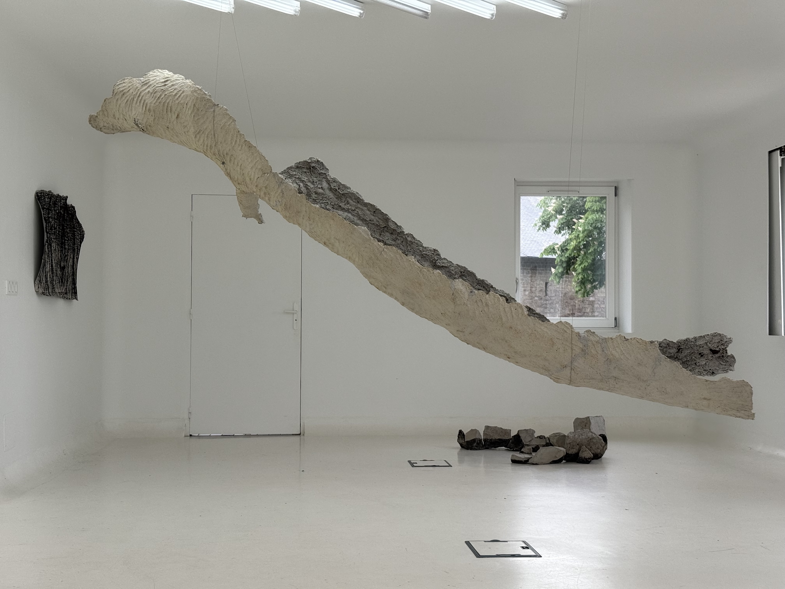

L’ombre-du-peuplier-courbe
Lors d’une balade dans la forêt de l’île de Vassivière, j’ai découvert un peuplier à la forme courbe, qui se distinguished parmi les troncs droits et verticaux de la forêt.
J’ai séparé son tronc en deux sections pour en prélever des empreintes en pâte à papier, afin d’en conserver la texture. Au fil du processus, les traces des gestes des doigts se mêlent à celles de l’écorce, faisant dialoguer la mémoire du corps et celle de l’arbre.
Une fois séchées, les empreintes ont été décollées, réassemblées, puis installées dans l’espace, où elles prolongent la présence de l’arbre sous une autre forme.


